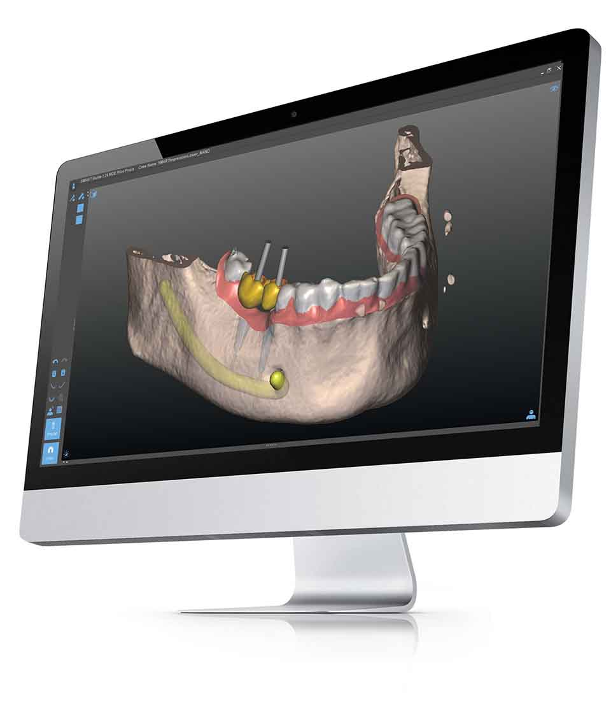

Dr Borbáth Csaba több közel 30 évvel ezelőtt alapította a Dr Borbáth Mosoly Központot.
Célja a fogászat egy új dimenziójának megnyitása, ahol a szaktudás, a tapasztalat, a modern technológia,
a kedvesség és az elegancia találkozik.
Implantológiai és Esztétikai Fogászati Központunk Magyarország egyik legnagyobb, világszínvonalon felszerelt,
folyamatosan megújuló rendelője, szakorvosaival várja pácienseinket
komplex megoldást ajánlva bármilyen fogászati vagy szájsebészeti problémáról legyen szó.
Fogászatunk fő profilja a FÁJDALOMMENTES fogbeültetés, a csontépítés és az esztétikai fogászat.
Munkáink minőségét garantálja teljes körű diagnosztikai rendszer, digitális panoráma röntgen, CT,
csúcsminőségű berendezések, eszközök és anyagok. A felhasznált fogászati és szájsebészeti anyagokat
a világ élvonalába tartozó gyártóktól válogatjuk össze.
FÁJDALOM NÉLKÜL
Tűmentes érzéstelenítéstől (szedáció)- kéjgázas bódításig, helyi érzéstelenítéstől az altatásig.
Nagyon gyakran azért nem mennek el az emberek fogorvoshoz, mert egy kellemetlen emlék, vagy csak maga a tudat, hogy a szájába nyúljanak idegen eszközökkel, elveszi a bátorságukat és ez sajnos a későbbiek során megbosszulja magát.
Fontos fogaink rendben tartása, hisz a romló fogak már önmagukban is számos megbetegedés forrásai lehetnek, nem beszélve az elégtelen rágás okozta emésztőszervi problémákról. A mai modern világban már egyáltalán nem szükséges a fogorvostól féljünk, mert az egyre modernebb technológiák, érzéstelenítő szerek jó eséllyel megfelelőek a kellemetlenségek elkerülésére.
TŰMENTES ÉRZÉSTELENÍTÉS
Már a tű vagy a szuri hallatán is kiráz a hideg? Ne félj! A Borbáth Fogászaton a TŰMENTES ÉRZÉSTELENÍTÉST is választhatod, akár már 4000 forinttól.
Ne halogasd tovább a fogászati beavatkozást, foglalj időpontot most, akár üzenetben. Itt fájdalom nem, csakis a mosoly lakik!
SZEDÁCIÓ- KÉJGÁZAS BÓDÍTÁS
Elsősorban szorongó pácienseknek ajánlott, hisz a kéjgáz fájdalomcsillapító hatása mellett a félelem oldását is előidézi. Az USA-ban és több más országban, így Angliában, Ausztriában és a Skandináv országokban a fogorvosok több mint 50%-a rutinszerűen használ kéjgázt a kezelések során.
Egy kis arcmaszkon keresztül belélegzett kis mennyiségű kéjgáznak is jelentős hatása van a páciensre. A megkönnyebbültség érzése és a feszültség elmúlása egy könnyed transz állapotot idéz elő, mely alatt a páciens tudatánál van és képes az orvosával kommunikálni, kérdésekre válaszolni, öblíteni. stb.
A nyelési reflexei is megmaradnak, tehát nem nyelhet félre, és az ehhez hasonló hiedelmektol sem kell tartania. Mellékhatás nem lép fel a kezelést követően. A félelmet és a szorongást biztonságérzet váltja fel, ami egy fejhallgatón hallgatható relaxációs zenével még tovább fokozható. Ezt az állapotot kéj hipnózisnak nevezik. A félelemmel egy időben a fájdalom is eltűnik, így a nyugtatót tartalmazó injekció már nem lehet probléma a páciensnek.
ALTATÁS
Mikor lehet szükség altatásban végzett fogászati kezelésre?
- Kellemetlen gyermekkori emlékek miatt fennmaradó, az átlagostól erősebb félelem a fogorvostól.
- Erősen elhanyagolt fogazat rendbetétele, azaz, ha egy alkalommal akarja valaki bepótolni a hosszú évek óta elmaradt fogászati kezeléseket.
- Erős hányinger miatt a kezeléseket másképpen el nem tűrő személy esetében.
- Ha valaki képtelen elviselni a fúró hangját vagy a rezonálását.
- Egyre gyakoribb, hogy üzletemberek egyszerűen időhiány miatt akarják használni az ily módon egyszeri kezelések lehetőségét.
Felszereltség (SMART GUIDE)
SIKERES IMPLANTÁCIÓS FOGPÓTLÁS TITKA
Számítógépes műtéti tervezés és navigált implantáció Precíz és biztonságos kezelés,
a lehető legkevesebb kellemetlenséggel! Sikeres implantációs fogpótlás titka
A fogorvosi szakma egyértelmű álláspontja szerint az implantátum beültetés sikerességének
egyik legmeghatározóbb tényezője, az implantátum pozíciója.
AZ IMPLANTÁTUM POZÍCIONÁLÁSA EGY KÉNYESEN PRECÍZ SZÁMÍTÓGÉPES MŰTÉTI TERVEZÉS ÉS NAVIGÁLT
IMPLANTÁCIÓ, PRECÍZ ÉS BIZTONSÁGOS KEZELÉS, A LEHETŐ LEGKEVESEBB KELLEMETLENSÉGGEL!
HOGYAN VALÓSUL EZ MEG?
A legfejlettebb megoldás a hiányzó fogak pótlására
Az implantációs beavatkozások többsége, eddig hagyományos módon, röntgenfelvétel alapján és szabadkézzel
történt. A szabadkézi beültetés a fogorvos kiemelkedő szakértelme ellenére is, csak ritkán éri el a
kívánt pontosságot, mindezt ráadásul magasabb kockázatok mellett.
SMART GUIDE
A SMART Guide egy olyan forradalmi újdonságokat tartalmazó digitális technológia, amely lehetővé teszi
a kezelő orvos számára a tökéletes tervezést, és pozícionálást. A fogorvos számítógépen, nyugodt
körülmények között tervezi meg a beavatkozást, a páciensről készült 3 dimenziós felvételen.
NAVIGÁLT IMPLANTÁCIÓ
Az esztétikai és anatómiai szempontból is optimális terv alapján, a páciens számára egyedileg gyártott
műtéti segédeszköz gondoskodik arról, hogy az implantátum a tökéletes pozícióba kerüljön.
A SMART GUIDE TECHNOLÓGIA ELŐNYEI
Legkorszerűbb diagnosztika
A legmagasabb minőségű 3 dimenziós diagnosztika előzi meg a kezelést
Kockázatok minimalizálása
Precíz tervezésnek és kivitelezésnek köszönhetően elkerülhetőek a hagyományos implantáció
nem kívánt kockázatai, és szövődményei
Rövidebb műtéti idő
A lehető legfejlettebb előkészületeknek és az egyedi műtéti segédeszköznek köszönhetően, a
beavatkozás ideje a töredékére csökkenthető
Kevesebb kellemetlenség és fájdalom
Szemben a hagyományos, szabadkézzel végzett implantációval, megadja a lehetőségét, hogy minimális
sebejtés mellett történjen a kezelés. Ennek köszönhetően sokszor nincs szükség varratokra és
jelentősen csökken a fájdalomérzet
Elkerülhető kiegészítő beavatkozások
A meglévő anatómiai adottságok maximális kihasználásának köszönhetően, sok esetben elkerülhetőek a
költséges és kellemetlen kiegészítő műtétek
Összességében elmondható, hogy a SMART Guide technológiájának köszönhetően az implantáció precíz,
kiszámítható és biztonságos, ráadásul minimalizálja a beavatkozással járó kellemetlenségeket
EGY IMPLANTÁCIÓS KEZELÉS FOLYAMATA A SMART GUIDE RENDSZERREL

Orvosi konzultáció
Fogorvosa tájékoztatja Önt a kezelés és a SMART Guide részleteiről.
3 dimenziós diagnosztika
A csontszövet és lágyrészek feltérképezése céljából, CT felvétel készül a foghiány
területéről. A felvétel elkészítése teljesen fájdalommentes, és mindössze néhány
másodpercet vesz igénybe.
Számítógépes műtéti tervezés
A CT felvétel alapján fogorvosa nyugodt körülmények között, számítógépen megtervezi az
implantációs beavatkozást. A tervező programnak köszönhetően tökéletesen lehet modellezni
az implantátumok elhelyezkedését és optimális méretét, figyelembe véve a rendelkezésre álló
csont mennyiséget és minőséget, valamint az idegcsatornák és az arcüregek elhelyezkedését.
Implantációs beavatkozás
A műtéti terv alapján készült egyedi műtéti segédeszköz - implantációs sablon - segítségével
megtörténik a beavatkozás. Az implantációs sablon használata biztosítja, hogy az
implantátumok tökéletesen a tervezett helyükre kerüljenek, és, hogy Önnek a lehető
legkevesebb kellemetlenséggel járjon a kezelés.
Kész fogpótlás
Az optimális pozícióba beültetett implantátumra fogorvosa elkészíti a lehető legideálisabb
fogpótlást.
A lehetőségekről és a beavatkozás részleteivel kapcsolatban kérjen konzultációt fogorvosától!